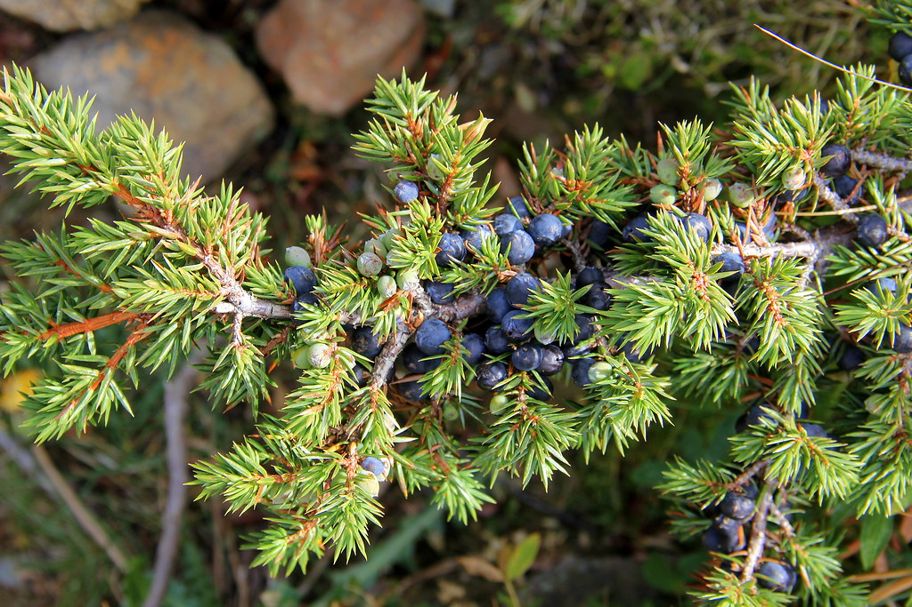
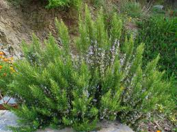

Per entendre els següents remeis cal saber com es cofeccionen les plantes medcinals. Eus aquí algunes de les maneres de confeccionar-les.
Aiguardent, alcohol o vi:
Es posen les plantes dins una ampolla de vidre i s’acaben d’omplir amb el líquid (alcohol, vi o aiguardent que no sigui dolç). Es deixa macerar durant unes setmanes, de dos a tres, per tal d'extreure'n els principis actius.
Olis i vinagres:
Es poden preparar en fred o en calent:
En fred es segueix un procediments semblant als alcohols. Es poden les plantes en un pot de vidre i s’acaba d’omplir amb el líquid. Es deixa macerar unes setmanes. Normalment es guarda amb les plantes a l’interior.
En calent es fan bullir les plantes amb el líquid, és cola i es fica en pots de vidre. Hi ha qui no ho cola i ho guarda tot junt.
Cataplasmes:
Els ingredients per a les cataplasmes poden ser: plantes aixafades, plantes aixafades i ruixades amb un líquid calent ( sol ser oli o vinagre), plantes aixafades fregides que solen ser també oli o vinagre, alguna farina barrejada amb aigua, llet o vinagre fins a obtenir una pasta o ungüents.
La preparació consta de posar els ingredients ja confeccionats entre dos draps de fil o dues gasses. S’apliquen calents damunt la zona afectada i es subjecten amb un altre drap o una bufanda.
una vegada ja coneixem com es confecciones les plantes
All
Allium sativum
El podem trobar tot l’any al supermercat o a les verduleries
Ens ajuda a combatre el dolor fent fregues a la zona afectada amb l’alcohol del bulb de l’all.
Àrnica
Arnica Montana
La podem trobar des del juny fins l’agost a pastures d’alta muntanya o sobre terreny silícic.
Ens ajuda a combatre el dolor fent-nos fregues amb l’alcohol de les fulles d’àrnica.
Evitarem no ingerir-ne, ja que és tòxica en altes dosis.
Olivarda
Dittrichia viscosa
La podem trobar del setembre fis l’octubre a vores de camins, camps i codolars fluvials.
Per combatre el dolor es fan fregues amb l’alcohol o l’oli en fred de la planta.
Espígol
Lavandula latifolia
Altrament conegut com «lavanda», barballó o barmaió.
La podem trobar de juny a setembre a brolles, prats secs, garrigues i roquissars de terrenys calcaris.
Per combatre el dolor es fan fregues amb alcohol o oli d’espígol o també es fan massatges amb oli d'ametlles que hagi macerat amb l’espígol. Es fan servir les flors i la part aèria.
Carbassina
Bryonia cretica
La podem trobar de l’abril a l’agost a vorades de boscos humits, bardisses i indrets més o menys ruderalitzats.
Per combatre el dolor s’apliquen cataplasmes de l’arrel a la zona adolorida, s’apliquen compreses impregnades amb el vinagre també de l’arrel. També es poden fer fregues amb oli d’arrel.
S’ha d’anar amb molta precaució de no ingerir aquesta planta, ja que en baixes dosis pot ser perjudicial i en altes dosis pot ser mortal
Alquequenegi
Physalis alkekengi
Aquesta planta és molt difícil de trobar pel territori català així que es recomana anar-la a comprar i cultivar-la. Se’n poden trobar des de maig fins a l’octubre.
Per combatre el dolor i la torticoli es fan servir es fan fregues amb l’oli de les granes.
Col
Brassica oleracea
Aquesta planta la podem trobar a qualsevol supermercat o verduleria.
Per a combatre el dolor, s’apliquen cataplasmes de les fulles de la col a la zona afectada.
Farigola
Thymus vulgaris
La podem trobar de febrer a maig a prats secs, brolles i costers assolellats. És una de les plantes amb més propietats medicinals de Catalunya, així que es pot trobar a qualsevol lloc on hi hagi herbes medicinals, com pot ser un herbolari o algun supermercat que en venguin.
Per combatre el dolor farem fregues amb el vi que haurem bullit juntament amb la part aèria de la farigola
Freixe
Fraxinus excelsior
El podem trobar amb fruit d’abril fins a maig a boscos humits.
Per al dolor, es beu l’aigua de fulles o fruits i es fan banys amb l’aigua de fulles de freixe.

Ginebre
Juniperus communis subsp.communis
Es troba amb fruits de març a maig a boscos, brolles i prats secs.
Per al dolor es fan fregues amb l’oli de les granes.
Compte a no ingerir cap part de la planta incloent-hi els fruits, ja que tota ella es tòxica al contenir àcid cianhídric
Heura
Hedera helix
La trobem amb fruits al setembre i a l’octubre a boscos, en indrets més o menys rocosos i ombrívols, a vegades surten enganxades a construccions.
Per al dolor, utilitzem l’aigua de fulles d’heura per fer fregues a la zona afectada
Julivert
Petroselinum crispum
És època de julivert de juny a agost però es pot trobar a qualsevol supermercat o verduleria.
Per a disminuir el dolor d’una manera general es beu l’aigua de la part aèria del julivert.
Llentiscle
Pistacia lentiscus
Es pot trobar de març fins a maig a brolles i a alzinars.
Es fan fregues amb alcohol de llentiscle i es fan servir les fulles, l’arrel i la branca.
Malví
Althea officinalis
Es poden trobar florides des de juny a agost a sòls humits.
Per a combatre el dolor, es fan cataplasmes d’arrel de malví aixafades.
Noguer
Juglans regia
Es troba amb els fruits madurs als voltants de setembre tirant més cap a octubre.
Per al dolor s’apliquen compreses impregnades amb vinagre de pela de nou, s’aconsella anar amb compte, ja que el vinagre de noguer és un remei molt fort.
Ortiga barragana
Urtica urens
Es troben de març a octubre a vegetació ruderal.
Es beu l’aigua de la part aèria d’ortiga barragana durant tres dies seguits. Tradicions populars diuen que és més efectiu si es beu a partir de la primera lluna nova del mes de març.

Romaní
Rosmarinus officinalis
Es troba tot l’any a brolles i matollars. És una planta amb moltíssimes propietats medicinals, juntament amb la ja mencionada farigola són les que aporten més propietats beneficioses.
Per al dolor es poden fer varies coses utilitzant la part aèria de la planta:
-Es beu l’aigua de romaní amb julivert
-Es fan fregues amb alcohol de romaní, alcohol de romaní i espígol, oli de romaní, vi bullit amb romaní.
Ruda
Ruta graveolens
Es pot trobar tot l’any a qualsevol tenda on hi venguin plantes medicinals i a zones de muntanya en terres àrides.
Per al dolor es fan fregues amb oli de ruda , que es pot preparar amb la part aèria de la ruda juntament amb arrel de carbassina.
S’ha d’anar amb compte al utilitzar aquesta planta, ja que pot tenir efectes negatius envers l’aparell reproductor femení i efectes nocius a les persones si s’ingereix.
Cap d’ase
Lavandula stoechas
Es troba del maig a l’agost a brolles.
Es fa servir alcohol de la part aèria de la planta per fer fregues per combatre el dolor.
Userda
Medicago sativa
Es troben d’abril a octubre cultivada per els pagesos, així que recomano demanar userda a algun pagès i a vegades a les vores dels camps i camins n’hi ha.
Per al dolor s’apliquen cataplasmes d’userda xafada, que cal canviar dues o tres vegades al dia.